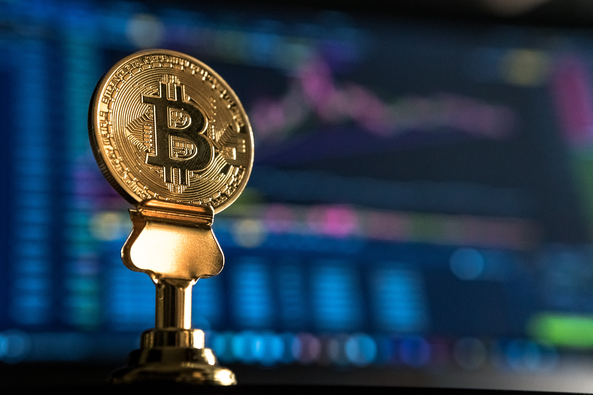

블록체인 기술을 기반으로 한 대표적 사례는 비트코인으로 대표되는 가상화폐(또는 암호화폐)이다. 비트코인은 2008년 10월 나카모토 사토시로 알려진 프로그래머(또는 집단)가 온라인에 게재한 〈비트코인：P2P 전자화폐 시스템 Bitcoin：A Peer-to-Peer Electronic Cash System〉이라는 논문에 처음 등장하였는데, 이 논문에 따르면 비트코인은 화폐 발행을 독점하는 각국의 중앙은행체제와 자의적 통화정책에 대한 반발로 고안되었다. 나카모토는 논문에서 비트코인에 대하여 전적으로 거래 당사자 사이에서만 오가는 전자화폐라고 정의하고, P2P 네트워크를 이용하여 이중 지불을 방지한다고 주장하였다.
2009년 1월 3일 나카모토가 '최초의 블록(Genesis block)'을 생성한 이래, 비트코인 네트워크는 제시하는 문제를 풀면 블록을 생성할 수 있게 하고 그 대가로 비트코인을 지급하는 방식으로 작동한다. 문제를 풀어 비트코인을 얻는 과정을 '채굴(mining)', 채굴하는 사람을 '채굴자(miner)'라고 한다. 비트코인 전용계좌를 '지갑(wallet)'이라 하는데, 별도의 프로그램을 이용하면 누구나 만들어 보유할 수 있다. 비트코인의 신뢰성은 '작업증명(PoW；Proof of Work)'이라는 사용자 상호 검증을 통하여 확보되며, 10분마다 그 사이에 이루어진 거래 내역들이 하나의 블록에 담겨 사용자의 컴퓨터에 분산 저장된다.
한편, 2017년 1월 약 11조 원의 금융상품을 관리하는 세계 최대 금융거래정보저장소인 DTCC(Depository Trust & Clearing Corporation)에서 향후 파생금융상품의 모든 거래 정보를 블록체인 기술을 활용하여 저장하고 관리하겠다는 계획을 발표하는 등 금융 분야에서 블록체인 활용이 확산되고 있다. 또한 금융 분야 외에도 데이터 관리와 상거래 등 보안과 인증이 요구되는 많은 분야에서 블록체인을 활용하려는 다양한 시도가 이루어지고 있다. [네이버 지식백과] 블록체인 [Blockchain] (두산백과)
